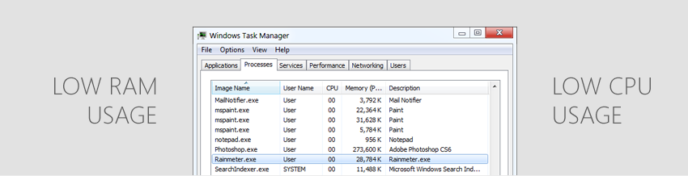

How does it work?
Omnimo is powered by Rainmeter, a super fast and simple customization tool that works on Windows.
It’s compatible with every other Rainmeter suite.
Best of both worlds
Whether you like Windows 8 or not, you can still get a taste of the new Metro interface without having to limit the way you use your computer!
Omnimo simply allows you to place modules and items on your desktop, it doesn’t change the way you use Windows. The startmenu, the taskbar, and even the desktop icons (optional) are still there and integrate really well. Almost like Sidebar Gadgets, you can toggle the modules on & off.
You can even use Omnimo on Windows 8, if you find that the new Start Screen hinders your productivity too much.
